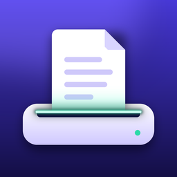

Effective 21 November 2026.
eZscan Pro has no account, no analytics, no advertising and no tracking. It sends no data to the developer or to anyone else.
The app connects only to printers and scanners on your network, or to addresses you enter. Documents you print go directly to the printer you choose.
You can change these at any time in Settings. Nothing from them is sent off your device.
Every scan is kept privately in the app on your device from its first page until you delete it. eZscan Pro never copies a scan anywhere on its own. (Version 1.0 moved scans you hadn't saved to Photos when you left the app; this was removed in version 1.0.1.)
Saving a scan to Photos, exporting it to Files or sharing it gives a copy to another app or service, which handles it under its own terms and privacy policy. Apple Photos may synchronise it with iCloud Photos, depending on your settings, so it may appear on other devices connected to your Apple Account, and other apps with access to your photos may be able to read it. A copy exported to iCloud Drive or another cloud service is stored there. eZscan Pro cannot tell whether iCloud Photos or iCloud Drive is turned on. Sensitive documents such as passports, bank statements, tax or medical records are better kept in eZscan Pro. If iCloud Backup is on, your device backup also includes the app's documents.
The app collects no data from anyone, including children.
If this policy changes, this page shows the new version and date. Questions: open a request.